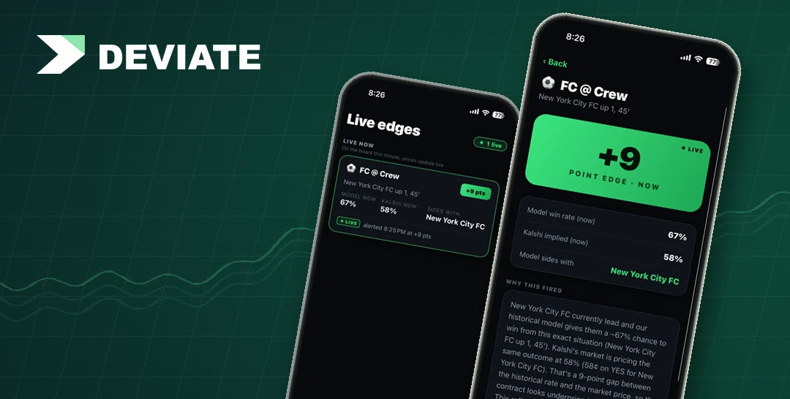
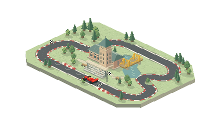
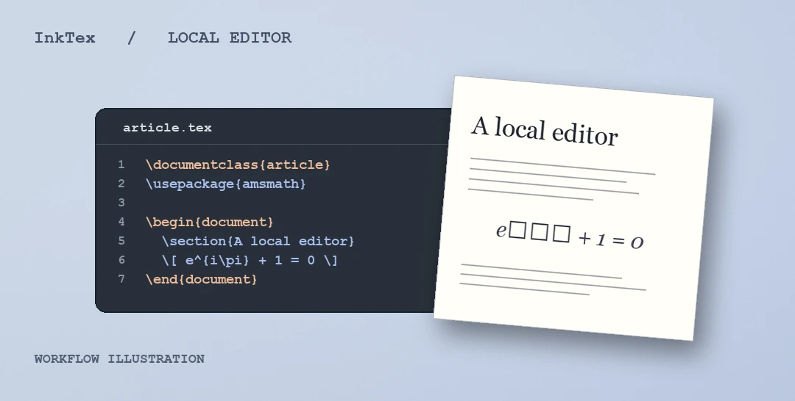

Deviate
An iOS app that alerts users when my win-probability models diverge from live Kalshi prices.
I study computer science at Carnegie Mellon. I build apps, work with racecar telemetry, and explore how machines learn to drive.


An iOS app that alerts users when my win-probability models diverge from live Kalshi prices.

A live dashboard and lap-analysis tool for Forza’s 60 Hz telemetry stream.

Putting brake, throttle, and steering data on one timeline for Carnegie Mellon Racing.

A local desktop LaTeX editor that keeps source, compiler feedback, and PDF preview together.
I evaluate vision-language-action driving policies in simulation with Prof. John Dolan. I’m investigating whether a smaller model can retain a larger policy’s driving behavior and still make decisions fast enough for an F1TENTH car.
I published research on AI-assisted leukemia detection. In a separate study, I used principal component analysis, regression, and machine learning to examine factors associated with liver cirrhosis and esophageal varices.
I like building tools for things I already spend time doing. Sim racing led me to write a telemetry app. Writing technical documents led me to build a LaTeX editor.
At CMU, I teach recitations and hold office hours for 15-122. I help students trace memory errors in C and reason about why their programs work. Away from the keyboard, I play tennis and spend time with friends.
I’m looking for a Summer 2027 internship. Have a role or a project in mind? I’d love to hear about it.